Follow my adventures exploring this paradise island.
San Bartolomé de Tirajana
27°55′32″N 15°34′21″O
Santa Lucía de Tirajana
27°54′44″N 15°32′26″O
Arucas
28°07′06″N 15°31′24″O
Ingenio
27°55′17″N 15°25′57″O
Tejeda
27°59′51″N 15°36′50″O
moya
28°06′39″N 15°35′00″O
presa del pinto
arucas
--
1
This reservoir is located in the north of the island and has a beautiful walk (approximately 1 h) around it taking you along a footpath into a wooded area. Plenty of trees and plants to make the walk that little bit more special. You can cross over the dam at the other end and make your way down along a footpath. To access the presa take the GC-300 and you will see the turning at Barranco de los Bañaderos.
Presa de Tirajana - La Sorrueda
santa lucía de tirajana
--
1
Located in the Santa Lucia region this presa sits in
Barranco de Tirajana.
Take the winding road down from Mirador de la Sorrueda
(where I parked my car) into the valley bottom.
From here you can walk the track through Barranco de Tirajana.
There is a gravel road along the barranco which gives access to fincas
and electrical sub stations. The walk is surrounded by imposing cliff
walls towering above you. Numerous caves and side valleys all leading into the
ravine. The views are stunning and the walk is easy. Well worth a visit if you
want an easy walk with dramatic scenery.
barranco de berriel
san bartolomé de tirajana
--
1
Located in the south of the island starting Bahia Feliz.
This Barranco is approx 3.4km long with easy walking and
after the recent rains has many beautiful pools and waterfalls
to take a dip in. The views are stunning and the path to the
first pools is easy. To the bigger pools and waterfalls deeper
in the valley you do need to do a little climbing up some
steep paths however the views and photo opportunities are
certainly worth it. Access to the parking area is on the waste
ground opposite Garbos on the GC-500.
Ayagaures to Tunte
san bartolomé de tirajana
--
1
This day started with a little stroll and ended up on a
full scale 8hr hike (including breaks and lunch) to Tunte
and back 27km round trip. The route takes you up through the
Barranco crossing over the peak and then back down the other
side arriving into Tunte. This is an absolutely stunning route,
the views are breathtaking however the initial part of the walk
is difficult and gains alot of altitude. The silence of nature
and the smell of the pine trees make this one a good mood lifter.
Make sure you are fully prepared with enough water and snacks.
The route is accessed via Presa de Gambuesa where you park the car.
Cross over the dam and follow the winding road which takes you upto
the trail to Tunte. This is one of my favourites as the views need
to be seen to be believed.
barranco del toro
san bartolomé de tirajana
--
--
Barranco del Toro is a deep rugged valley in the south of
the island near San Agustín. There are 2 ways to see this
valley. You can either walk from its very start which is first
located by walking through Barranco de los Guinchos or you can
take the high path along the peak of Barranco de Veguas and come
down into Barranco del Toro at the other end. The first option
involves a more difficult hike and scrambling up steep waterfalls.
The second route is the one I chose at it was a nice steady climb
at the valley tops with great views. Once at the end of the trail
the path does become alot more difficult as you descend down into
Barranco del Toro where the pools and waterfalls are located. The
views and rugged terrain are stunning and the route takes you through
a goat farm where you walk amongst the flock and can even buy the cheese
they make on the farm. The route I took is accessed to the left of the
Gloria Palace Hotel where the staff car park is. Walk to the top of the
car park and you will see the tunnel under the GC-1 which is the start
of the route.
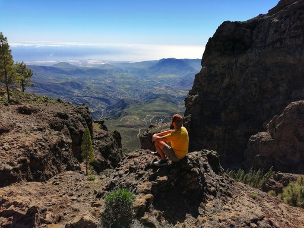
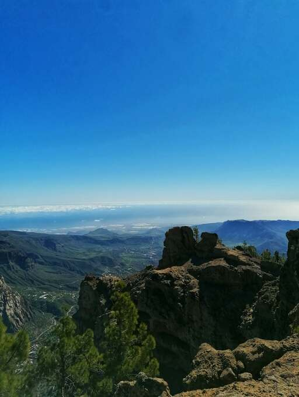
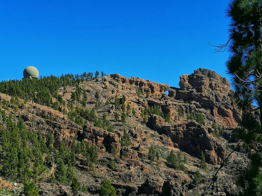
Llanos de la Pez (circular route)
san bartolomé de tirajana
--
--
Llanos de la Pez is a beautiful Nature Reserve located in the center of the island.
Its a beautiful spot for camping or for picnics. The area is also the start of many
hiking trails. The one I chose today was the circular route.
The route takes you through the pine forest, across rocky outcrops and up to the peaks
where you get some amazing views of Roque Nublo. You can see across the Island and on
clear days you get beautiful views of Tenerife.
About half way through the trail when you get to the tops the trails split into many
different routes.
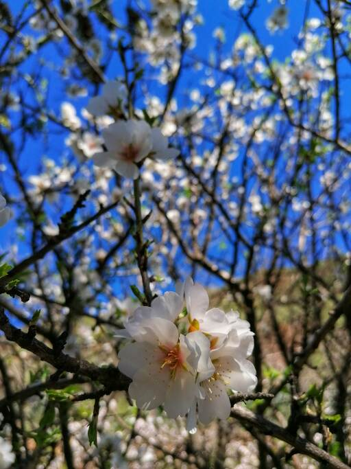
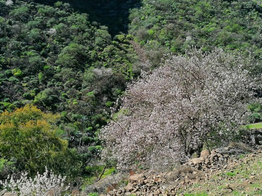
.
barranco de guayadeque
ingenio
--
--
This beautiful valley is one of my favourites and close to my home.
I took a hike during the Almond Blossom season (end Jan beginning Feb)
and all I can say is wow. The route starts at the last restaurant on
the main access road and takes you up into the heart of the valley.
Passing through small fincas and old abandoned buildings upto the Caldera.
You can also continue on upto Pico de las Nieves (this route will be a future update).
The valley itself is stunning and peaceful, well worth a visit.
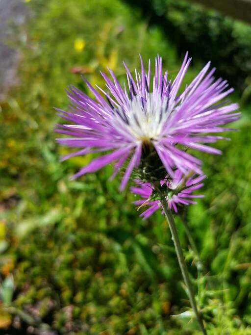
barranco oscuro
moya
--
--
This walk was a true hidden gem. Browsing through google maps
I spotted this Barranco and thought id go have a look. Located
in the north of the island so a little drive to get to it but it
was worth it. Parked the car on the side of a back road and saw
a sign post for the start of the trail. After about 5 mins o
the trail the views opened up to a breathtaking view down into
the valley which was dotted with Fincas full with fruit trees.
The trail winds its way down into the valley and onto the main
road through the bottom. The walk is beautiful and covered with
flowers and fruit trees. there is another trail half way up the
road which then climbs up the other side. we followed this and
again were rewarded with amazing views. The path up is a little
steep in places but well worth it.
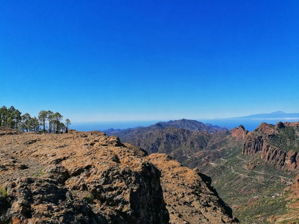
Llano de la Pez - Ventana del Nublo
san bartolomé de tirajana
--
--
Llanos de la Pez is a beautiful area up in the
mountains and the start of many different trails.
well worth a visit if you want to explore. I chose
this time to do the circular route and head upto
Ventana del Nublo. The views are breathtaking and
have to be seen to be believed.
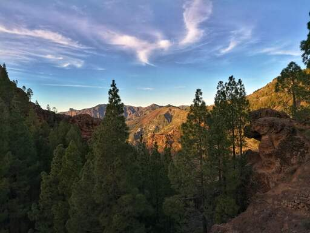
Presa de Los Hornos - Llanos de la Pez
tejeda
--
--
This is a very beautiful area of the Island
with many trails. This time I started at Mirador
Presa de Los Hornos and took the trail across the Presa
and upto Llanos de la Pez. The views are stunning. You
can take in the the scents of the pine forrest and the views
of Roque Nublo, Roque Bentayga and across to Tenerife. This
is also a great place if you want to take in a beautiful sunset.
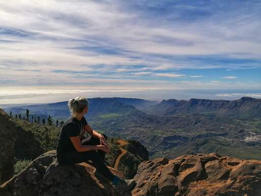
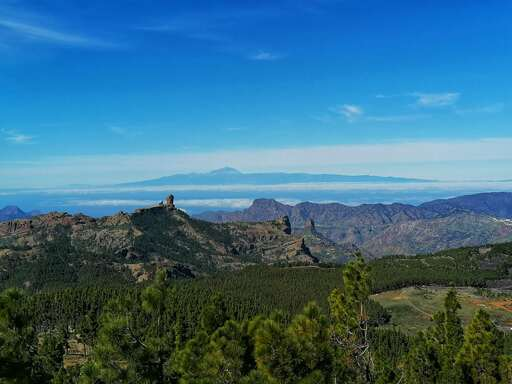
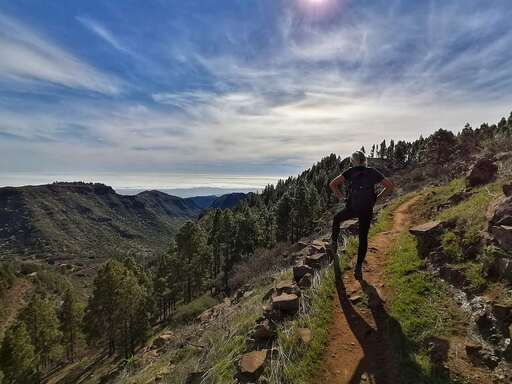
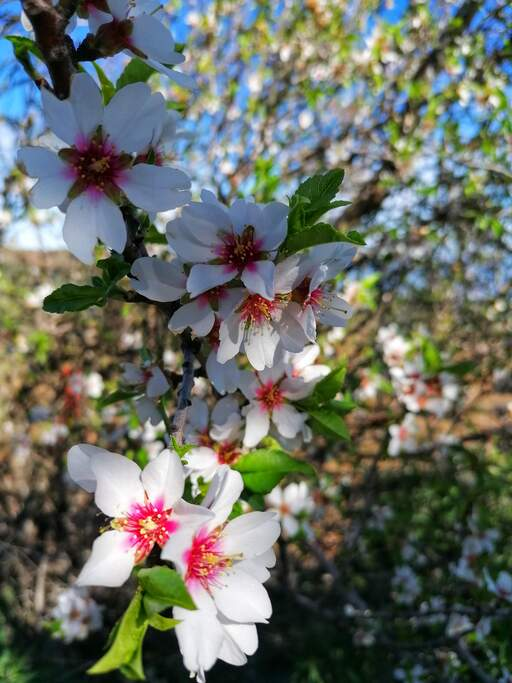
Barranco de Guayadeque - Pico de las Nieves
ingenio
--
--
If you are up for a challenge and dont mind a long hike
(28km round trip) then this route is for you. Starting in
Barranco Guayadeque you make your way through this stunning
valley and upto the start of the trail towards Pico de Las
Nieves. The climb here takes its toll on the legs but the views
are worth it. On the day I went the skies were clear and I could
see across to Fuerteventura. The trail then splits off into other
trails however I continued upto Pico de Las Nieves. The views
from the top are amazing and could see a clear view of Tenerife
and La Gomera. On the return I took a different trail back which
stayed above Barranco Guayadeque and came down at the middle of the valley.
Stunning views and lots of plants and flowers to enjoy along the way. One
of my all time favourites.
camino de santiago
*** updates to follow! ***
about me
My name is Dean and I want to share my Island adventures with you all.
Originally from the UK but now living on the beautiful Island of Gran Canaria off the Northwest coast of Africa.
I moved to the island Feb 2017 and it was the best decision of my life. I have a passion for adventure and love to explore in my free time. The best thing is to jump into your car head for somewhere new and see what you find. This is how I’ve found many of this islands secrets.
I decided to start this blog after several friends suggested I start one after seeing the pictures I had taken during my days out exploring.
gran canaria
Gran Canaria is a small island located in the Atlantic
Ocean and is approximately 150 kilometres off the northwestern
coast of Africa. With an area of 1,560 km2 (602 sq. mi) and an
altitude of 1,956 m (6,417 ft) at Morro de la Agujereada, Gran
Canaria is the third largest island of the archipelago in both
area and altitude.


 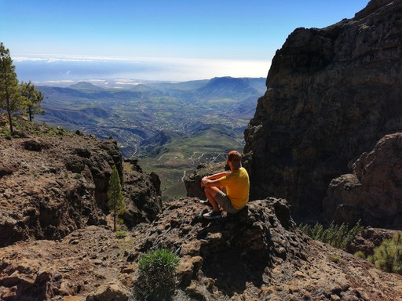
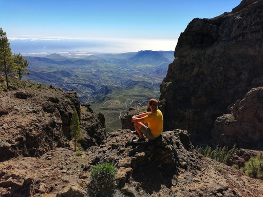


 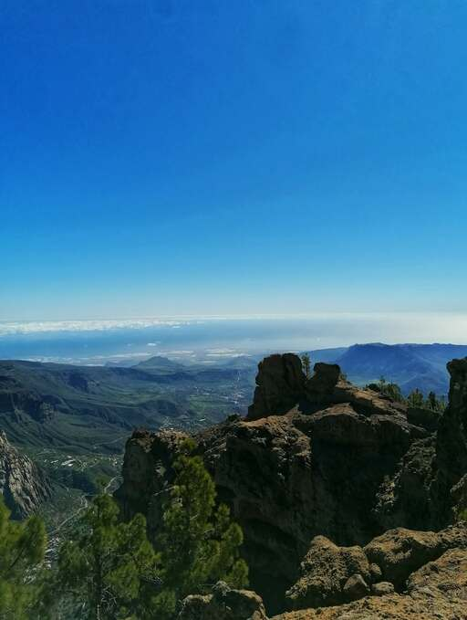
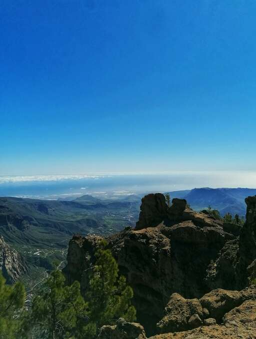


 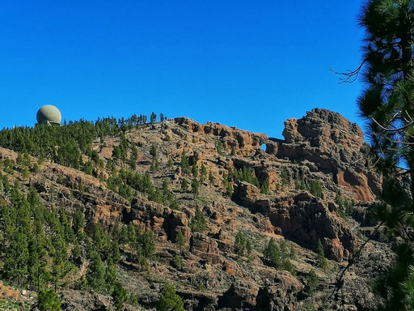
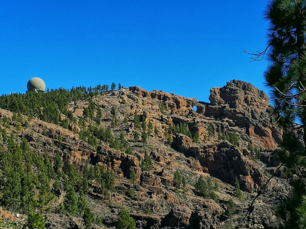


 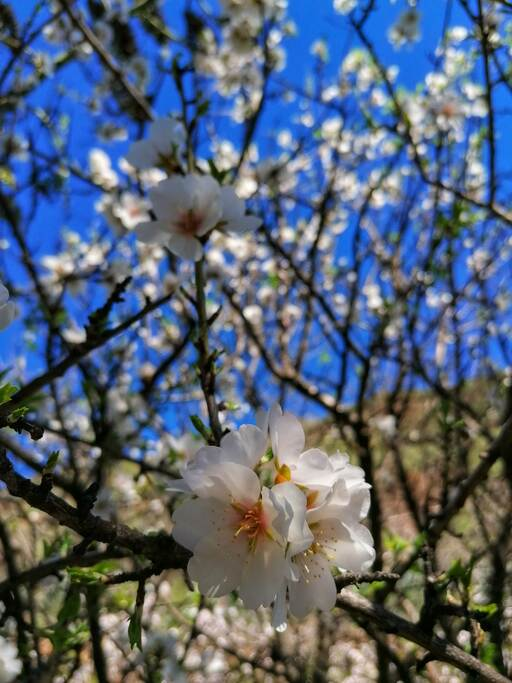
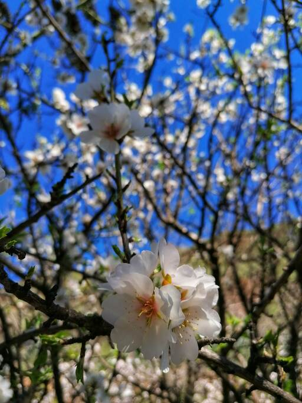
 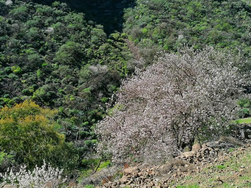
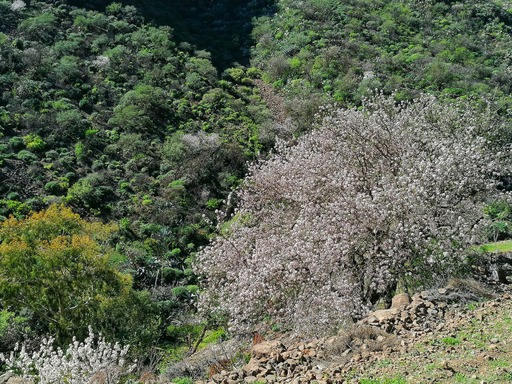


 .
.


 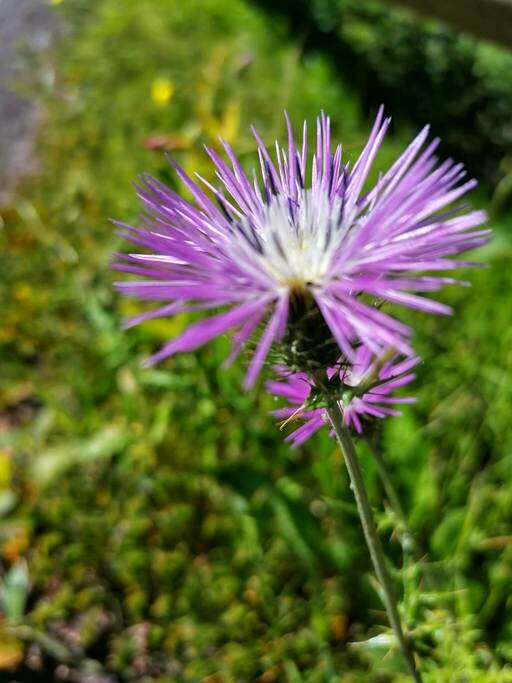
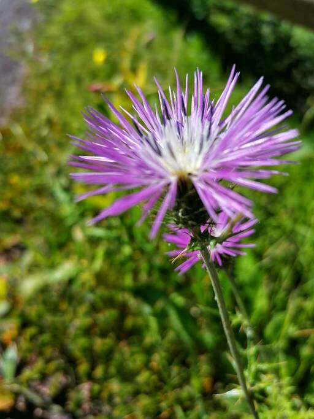


 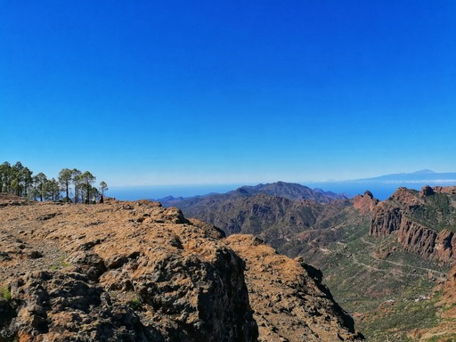
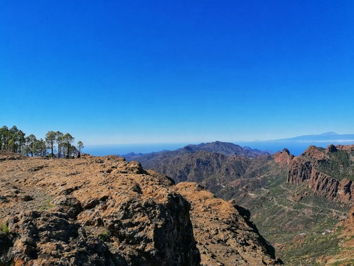


 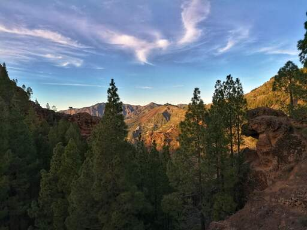
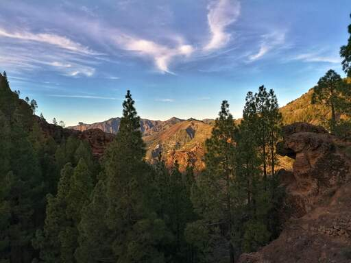


 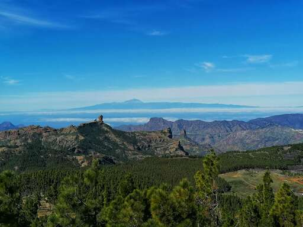
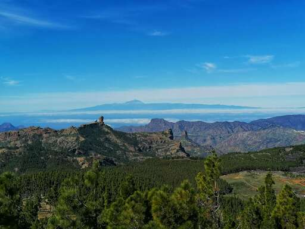


 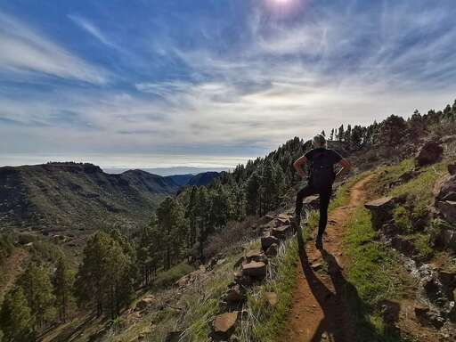
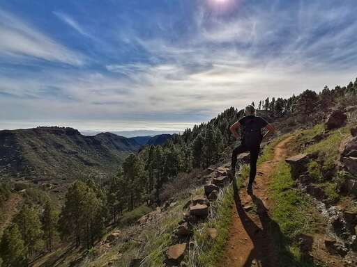


 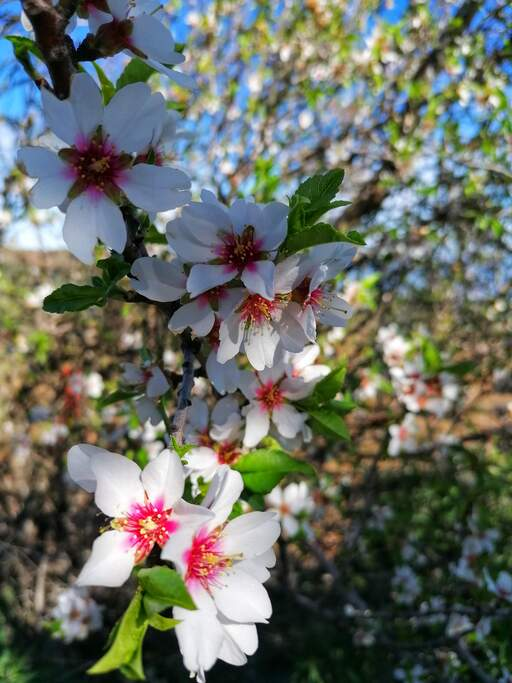
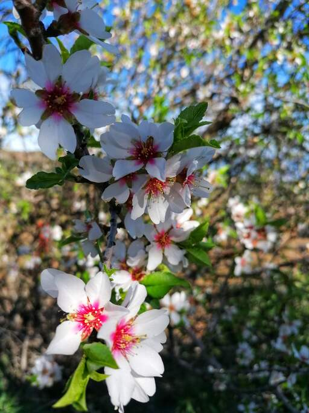